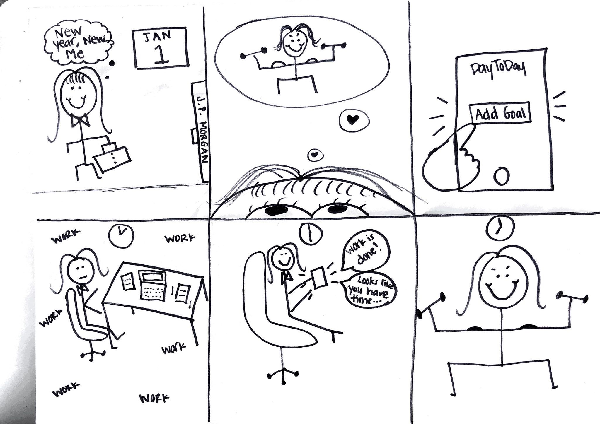
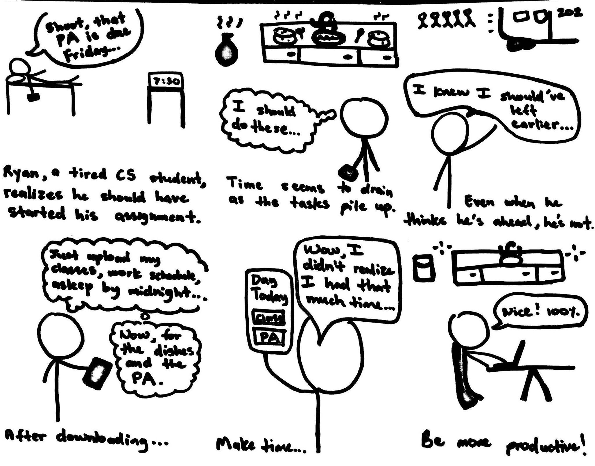
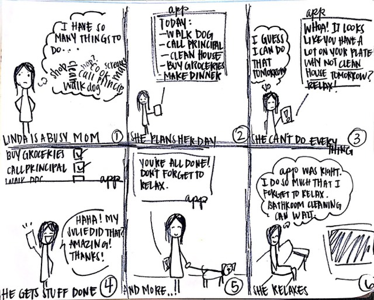
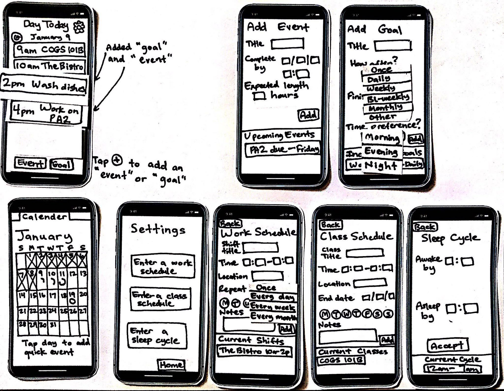
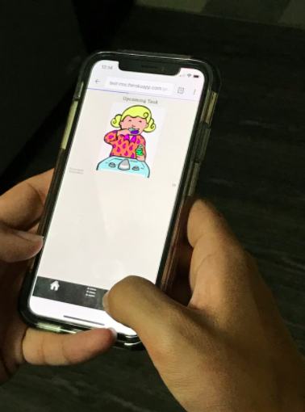
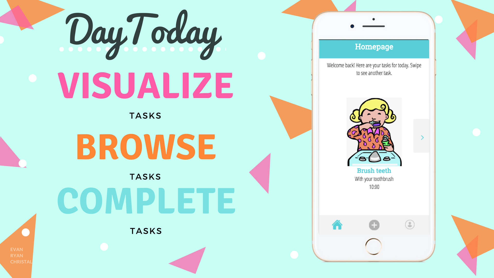
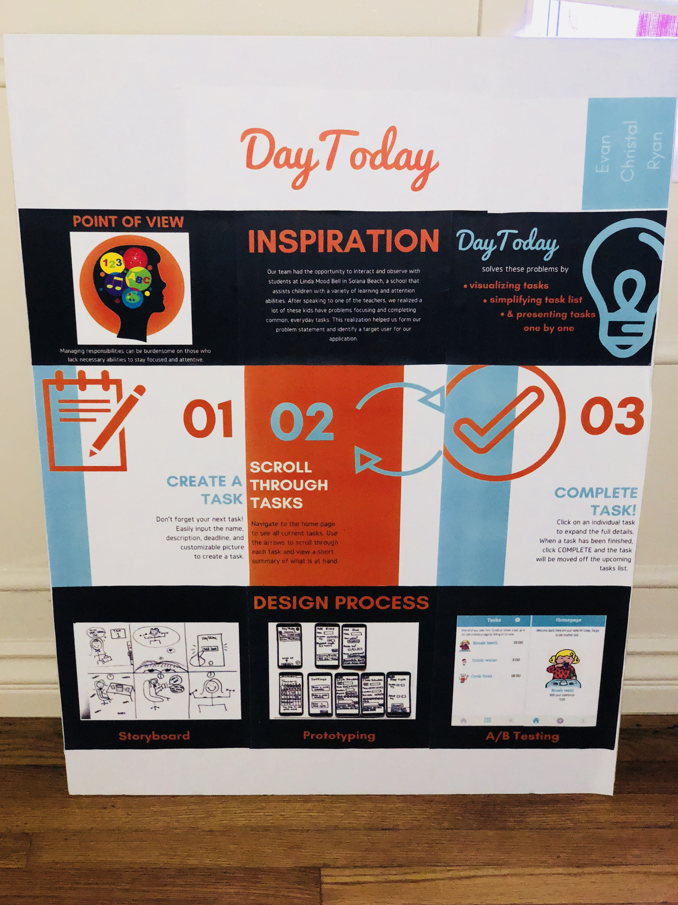

DayToday
Interaction Design
About
Day To-Day is a mobile-web app that helps users tackle their daily tasks one at a time. Created in COGS120, Interaction Design, with 2 other teammates
DayToday displays only one task and its visual component on the screen. We used local elementary students at a
specizlized school for attention disorders as our target audience. Our mission was to create a
technology that encompassed accessibility-design.In the end, we created an app using HTML, CSS, and
Javascript.
Duration & Roles
10 weeks | UX Researcher | UX/UI Designer | Programmer
Class Objectives
In the duration of this project, we learned techniques for rapidly prototyping and evaluating multiple interface alternatives — and why rapid prototyping and comparative evaluation are essential to excellent interaction design.
Aditionally, we learned how to conduct fieldwork with people to help generate design ideas and how to make paper prototypes and low-fidelity
mock-ups that are interactive — and how to use these designs to get feedback from teammates, clients, and users.
Main principles included visual design, perception and cognition to effectively organize and
present information with interfaces, and how to perform and analyze controlled experiments online.
Design Process
Needfinding
To better define our root problem and point of view, our team used user-research methods to gain a clearer
perspective on the path of our project. Research included competitive analysis,
observational resesarch, interviews, storyboards, and personas.


Our group went out to a local elementary school and was able to interview teachers who work with children
that have a variety of attention-deficit disorders. We used their feedback and insight, on top of student-behavior
observation to define our resulting point of view: Managing one’s time in a schedule is unorganized and easily forgettable.
Time is easier to manage when everything is laid out in a clear, memorable, and referable way.
Planning a productive and efficient schedule to keep one on task throughout their week should be
an automated and seamless process.

Prototype & User Testing
To flesh out our ideas, we created experience prototypes for user testing. Because we our target users are a
younger audience, we tried to test with kids and users who interact with children commonly. At first, we created
paper prototypes and used Wizard-of-Oz prototyping in our user testing.

We also used
heuristic evaluations and in-person interviews to consolidate our general characteristics and feedback of
the UI. After each test, we implemented our suggested improvements to address major usability problems. Towards the end
of our user testing, we used Heroku to deploy our high-fidelity prototypes for A/B testing. We implemented
Google Analytics to track the nubmer of clicks between our two versions of the app.

Finale
After analyzing our results, we deployed our final version of our mobile-web app: DayToday.
The app can be vest viewed on a mobile
device at this link:here. We also did a presentation on
DayToday to UCSD teaching assistants and
professors, as well as local professionals in the field.

